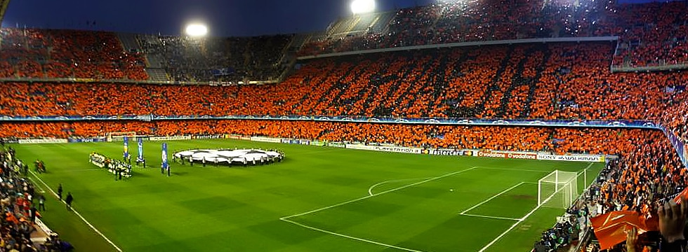

The biggest stadiums in Spain
Camp Nou
Camp Nou , meaning new field in Catalan language, often referred to in English as the Nou Camp is the home stadium of FC Barcelona and has been since its completion in 1957. It is located in Carrer d'Arístides Maillol. It has a seating capacity of 99,354, and it is the largest stadium in Spain and Europe, and the third largest football stadium in the world in capacity. It hosted two European Cup/Champions League finals in 1989 and 1999, two UEFA Cup Winners' Cup finals, four Inter-Cities Fairs Cup final games, five UEFA Super Cup final games, four Copa del Rey finals, two Copa de la Liga final games, twenty-one Supercopa de España final games, five matches including the opening game of the 1982 FIFA World Cup, two out of four matches at the 1964 European Nations' Cup and the football competition final at the 1992 Summer Olympics.
Mestalla Stadium
Mestalla Stadium is located in the downtown of the city of Valencia and is home to one of the biggest clubs in Spanish football Valencia C.F. It was initially opened in 1923 and has been renovated a number of times and is even currently undergoing further renovations. It has the capacity of little over 48 000 seats and a metro station located very close to it. It is famous for its steep North stand, which was built like that in accordance with the Spanish architecture at the time. Generally, the whole stadium seems extremely high when it is looked at from the outside. It is also painted in black, as Valencia C.F. are also known as “the bats” and the team color is orange, black and white. It is a must see venue if one visits Valencia.
